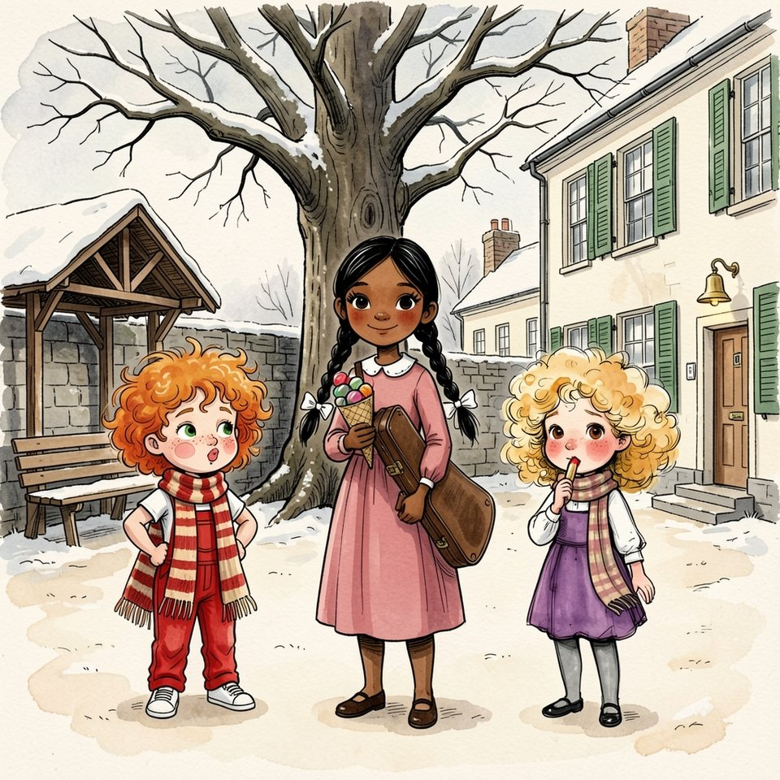

Titistoire › Les Comètes (6-8 ans)
La pièce trouée
Une année à Virevent, l'histoire du mois de février : Jeanne, Gaspard, Suzie et Marin.

▶ Écouter et regarder l'histoire
Gratuit, sans inscription : la voix lit, le texte suit mot à mot, les images tournent comme dans un album.
Le texte de l'histoire
En février, la neige de Virevent tournait à la gadoue, et l'on ne savait plus si l'on marchait dans l'hiver ou dans la soupe. Sous le cerisier nu, ce lundi-là, Garance distribuait des berlingots.
Elle recevait dix sous chaque samedi. Dix ! Elle tenait son cornet très droit, et choisissait : « Un pour toi. Un pour toi. Toi, non, tu en as eu jeudi. »
À la maison haute, on recevait un sou le samedi, et encore, quand onze enfants s'étaient tenus tranquilles. Jeanne n'avait jamais rien offert à personne, sauf des histoires.
Quand son tour arriva, Garance referma le cornet. « Ce n'est pas pour être méchante, mais j'en garde pour ceux qui en offrent quelquefois. » Jeanne sentit ses joues gonfler toutes seules.
« Vous n'allez pas me croire ! Demain, c'est moi qui régale ! Toute la cour ! Et pas des petits : des berlingots gros comme des œufs de pigeon ! » « Avec quels sous ? » demanda Garance.
Avec quels sous. C'était une question exacte, et Jeanne détestait les questions exactes. Un cornet coûtait trois sous. Elle en possédait zéro, et un bouton de culotte.
À quatre heures, elle trouva Gaspard sur le muret, qui comptait sa fortune dans sa main. « Gaspard ! Mon ami de toujours, né la même semaine, sur la même berge… » « Combien ? » soupira-t-il.
« Trois sous. Je te les rends samedi. Juré-craché-mouillé. » Il donna le premier sou tout de suite, le deuxième aussi. Le troisième, il le garda un instant entre deux doigts, et le fit tourner.
C'était un drôle de sou, percé d'un trou. Gaspard ouvrit la bouche comme pour ajouter quelque chose. Puis il la referma, et posa la pièce avec les autres.
Il tira son crayon de derrière son oreille et nota : « Jeanne. Trois sous. Samedi. » Elle galopait déjà vers le Bazar. Dans son poing, les trois pièces étaient chaudes comme des marrons.
La clochette du Bazar tinta. « Bonsoir, Jeanne », salua Monsieur Taupin sans lever la tête. Il n'y voyait presque rien, mais il connaissait chaque enfant au bruit de ses semelles.
« Un cornet de berlingots ! Le plus gros que vous ayez ! » Elle aligna ses pièces sur le comptoir. Le marchand les prit une à une et les tâta du bout des doigts, paupières closes.
Au troisième sou, ses doigts s'arrêtèrent. Ils firent le tour du trou, lentement. « Hm-hm. Tu es bien sûre, pour celui-là ? » « Sûre de quoi ? Il vaut un sou, même avec un trou ! »
« Il vaut un sou. » Les deux premières pièces tombèrent dans le tiroir-caisse. La troisième, Jeanne crut la voir glisser dans la poche du tablier ; mais elle ne regardait déjà plus que les bocaux.
Il remplit le cornet : des berlingots rayés, rouges, verts, jaunes, qui dégringolaient avec un bruit de grêle. Jeanne le serra contre son cœur. Jamais elle n'avait été aussi riche.
Le lendemain, à la récréation, Jeanne grimpa sur le muret. « Approchez ! C'est ma tournée ! » Toute la cour approcha. Il y eut des mains, des mercis, des « encore un, Jeanne ! ».
Même Garance en prit un. « Ils sont un peu petits », observa-t-elle ; mais elle le suça jusqu'au bout. Pendant un quart d'heure, Jeanne fut la reine de Virevent.
Gaspard eut son berlingot, comme tout le monde. Un vert. Il ne le croqua pas : il le fit durer, la joue ronde, en garçon qui sait exactement ce que la chose a coûté.
Puis la cloche sonna. Les mercis rentrèrent en classe avec ceux qui les avaient prononcés. Il ne resta à Jeanne qu'un cornet vide, un peu collant.
Les berlingots avaient duré une récréation. Dans la poche turquoise de Gaspard, sur une page de carnet, trois mots attendaient toujours : « Trois sous. Samedi. »
Samedi arriva beaucoup trop vite. Et ce samedi-là, à la maison haute, il n'y eut de sou pour personne : quelqu'un avait passé le chat au bleu de lessive, et aucun des onze ne s'était dénoncé.
Jeanne n'y était pour rien, pour une fois. Elle retourna ses poches : zéro sou, et toujours le bouton de culotte. Or elle avait juré. Et Gaspard avait écrit : samedi.
« Je pourrais lui expliquer, confia-t-elle à Titou, qui trônait dans sa charrette rouge. Mais il ouvrira son carnet. Il me regardera par-dessus ses lunettes. C'est une dette, tu comprends ? » « … ette ! » approuva Titou.
Elle attela la charrette et sortit. Au bout de la rue, une veste turquoise venait droit sur elle, sur le même trottoir. Le cœur de Jeanne fit un saut de carpe.
Elle aurait pu s'arrêter, et tout raconter, le chat compris. Elle traversa la rue, charrette et frère avec, et s'engouffra dans une ruelle. « Jeanne ? » appela Gaspard. Jamais elle ne s'était sauvée devant lui.
Dès lors, Jeanne ne passa plus par la place. Pour promener Titou, elle faisait le grand tour par le pont Bossu, la charrette cahotant sur les pavés. Titou adorait cela. Ses mollets, beaucoup moins.
Le mardi, Gaspard l'attendit à la grille de l'école. « Impossible ! cria-t-elle de loin. J'ai une extinction de voix ! » Elle l'avait hurlé. Elle dut chuchoter toute la journée pour que ce soit vrai.
Le mercredi, ce fut pire. « Ne t'approche pas ! J'ai la varicelle des pieds ! Ça s'attrape par les trottoirs ! » Il fallut boiter jusqu'au soir, et se rappeler de quel pied.
Sur le pont Bossu, Marin la regarda hisser la charrette. « Tu boites de l'autre pied qu'hier. » « C'est une varicelle qui voyage ! » Il hocha la tête. « Elle fait un grand détour, ta varicelle. »
Le pire, c'étaient les récréations. Jeanne les passait derrière le préau, à surveiller Gaspard de loin. Il ne jouait plus. Il restait au pied du cerisier, le carnet sur les genoux.
Chaque matin, il l'ouvrait à la même page et y traçait un trait. Un seul. Puis il regardait un moment du côté du préau, et refermait le carnet.
Un trait par jour ! Jeanne n'eut pas à chercher longtemps : des intérêts. Un petit quelque chose en plus pour chaque jour de retard, comme chez les banquiers des histoires.
Trois sous, avec tous ces traits par-dessus… Ses joues se gonflèrent, pour elle toute seule : bientôt trente sous. Cent ! Il lui fallait des sous tout de suite. Et à Virevent, les sous n'avaient qu'une adresse.
« Du crédit ? » Monsieur Taupin posa ses deux mains à plat sur le comptoir. « Hm-hm. Jamais de crédit, Jeanne. Du travail, toujours. » Il parlait bas, sans se presser, comme on pèse des clous.
Il l'emmena devant un tonneau plus haut qu'elle, où vingt ans de vis et de boutons s'étaient mélangés. « Les vis d'un côté, les boutons de l'autre. Trois soirs. Un sou par soir. »
« Un sou pour toute une soirée ? » « C'est le prix d'un sou. » Jeanne plongea les mains dans le tonneau. C'était froid, cela piquait, cela sentait le fer.
Elle voulut annoncer qu'elle aurait fini en dix minutes. Rien ne vint : devant un tonneau, on ne peut pas arrondir. Une vis. Un bouton. Du comptoir, le marchand écoutait tomber chaque chose. « Bouton chez les vis », signala-t-il.
Le premier soir, elle crut la pendule du Bazar arrêtée. Le deuxième, elle eut les doigts gris et le dos en point d'interrogation. Un sou, c'était donc long comme une soirée.
Et les berlingots avaient duré un quart d'heure. Trois soirées entières, fondues dans la bouche de toute une cour, et dans celle de Garance, qui les avait trouvés petits.
Le troisième soir, la dernière vis tinta dans sa boîte. Jeanne se redressa. Elle n'avait jamais rien terminé d'aussi long, ni d'aussi peu racontable. C'était une drôle de fierté.
« Hm-hm », approuva Monsieur Taupin. Il ouvrit son tiroir-caisse et ferma les yeux, comme toujours pour compter. Une pièce. Deux pièces. La troisième, il alla la chercher dans la poche de son tablier.
Il la tâta longuement avant de la poser dans la main de Jeanne. « Celle-là connaît le chemin. » Jeanne n'écouta pas. Elle referma le poing sur ses trois soirées et partit en courant.
Elle courut jusqu'à l'écluse sans faire aucun détour, par la place, par le milieu du trottoir. Le soir tombait, rose et violet. Gaspard était assis sur la passerelle blanche, le carnet sur les genoux.
Il leva la tête. Il ne sourit pas. « Tu n'as plus la varicelle des pieds ? » « Guérie », souffla Jeanne, à bout d'haleine. Elle ouvrit le poing au-dessus de la paume de Gaspard.
« Trois sous. Je les ai gagnés. Trois soirs chez Monsieur Taupin, à trier un tonneau. Un sou, Gaspard, tu ne peux pas savoir comme c'est long. » Pour une fois, elle n'arrondissait rien.
Gaspard compta, par habitude. Un. Deux. Au troisième, son doigt s'arrêta, exactement comme s'était arrêté celui du marchand. La pièce avait un trou au milieu.
« Où l'as-tu eue ? » Sa voix avait changé. « C'est lui qui me l'a donnée. Il a marmonné qu'elle connaissait le chemin. » Alors seulement, Jeanne regarda la pièce. Puis Gaspard.
« C'est mon sou, murmura Gaspard. Celui qui traverse la rivière avec moi, toutes les semaines. Je ne le dépense jamais. » Il le tenait dans sa paume comme un oisillon tombé du nid.
« Mais tu me l'as prêté ! » « Tu en demandais trois. J'en avais trois. » « Il fallait le dire ! » Il haussa une épaule. « Tu étais pressée. » Jeanne eut chaud aux oreilles, malgré février.
« Et toi, tu faisais le grand tour. Tu changeais de trottoir. J'ai cru que tu ne voulais plus de moi. » Il ouvrit le carnet. En haut de la page : « Jours sans Jeanne. » Dessous, sept bâtons.
Ce n'étaient pas des intérêts. Jeanne regarda les sept bâtons, bien droits, tracés un par un. « Je n'avais pas les sous. J'avais honte. Je croyais que tu me comptais du retard. »
Ils se turent. Ni l'un ni l'autre ne savait que faire de ses mains. Celles de Jeanne tortillaient son écharpe ; celles de Gaspard faisaient tinter les sous. Puis il se leva d'un coup. « Viens. »
Ils arrivèrent au Bazar juste avant la fermeture. Gaspard posa sur le comptoir les deux sous ordinaires. Monsieur Taupin les tâta, reconnut les deux pas, et lâcha un « Hm-hm » très satisfait.
Ce fut un petit cornet. Ils le mangèrent sur le bord de la fontaine, pendant que Madame Bogue allumait les réverbères. Personne ne fit la queue. Il n'y avait personne à éblouir.
Gaspard partagea : un pour elle, un pour lui, un pour elle, un pour lui. « Un partout », conclut-il.
Il en resta un, pourtant, tout au fond. Le treizième, un rouge. Un berlingot impossible à couper en deux. Gaspard le regarda longtemps, le tendit à Jeanne, et ne l'écrivit nulle part.
Puis il ouvrit le carnet et raya la ligne : « Jeanne. Trois sous. Samedi. » Le sou percé retourna dans la poche turquoise. Sous les réverbères, on entendit longtemps deux berlingots cogner contre des dents.